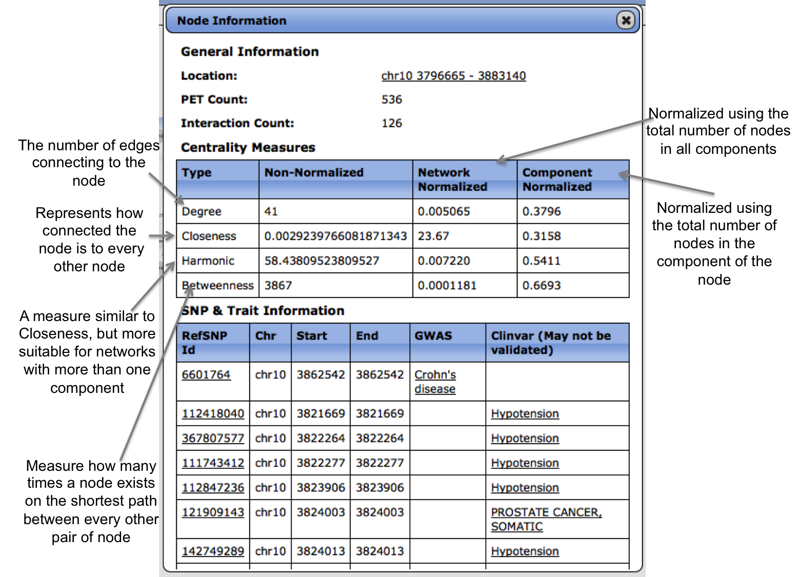

Network Visualization:
A network is composed of many connected components which
are a subset of nodes that are all connected via edges. A connected
component is such that there exists a path from one node to every
other node within the component for any node in the component.
The network statistics box displays information about all
of the components, nodes, and edges in the network, while the
component statistics box displays just the node and edge information
for the currently viewed connected component. Super-imposing datasets
onto the network will color the nodes differently depending on
whether or not the super-imposed datasets overlap with the regions of
the nodes. If more than one annotation exists, nodes will display all
of the colors in a "pie-chart" visualization.
Viewing Node Information:
Right clicking or double tapping a node will display more
information about that node including the number of PETs and
Interactions overlapping to define the node, the region the node
occupies, any associated diseases or SNPs and network measures
calculated on the node. There are also various links provided as a
convenience to further analyze the node of interest.

Above provides a brief description of the different network
measures provided when viewing more information about a node.
Network Measure Boxplots:
For each network measure calculated a boxplot can be viewed
in the network measures tab. The boxplot provides a way of briefly
analyzing whether certain annotations exhibit certain typs of
topologies in the network. In the above example, promoters of genes
are showing to have a slight higher degree.